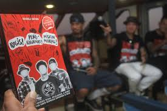
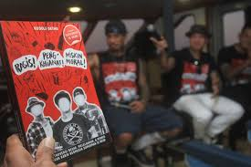

Superman Is Dead (disingkat SID) merupakan sebuah grup musik punk rock yang berasal dari Bali, Indonesia, bermarkas di Poppies Lane II - Kuta. Grup musik ini beranggotakan tiga pemuda asal Bali, yaitu: Bobby Kool vokalis, Eka Rock bassis dan Jerinx drummer.
Superman Is Dead atau yang biasanya dipanggil SID, terbentuk pada tanggal 18 Agustus 1995. Awal mula terbentuknya SID dimotori oleh anggota dari band heavy metal Thunder bernama I Gede Ari Astina atau yang sering dipanggil Jerinx, yang ingin membentuk band baru serta drummer dari band new wave punk Diamond Clash bernama I Made Budi Sartika yang biasa dipanggil Bobby Kool yang ingin menjadi gitaris dan vokalis.
Jerinx dan Bobby bertemu di Kuta Bali. Keduanya kemudian sepakat untuk membentuk sebuah band. Pada saat itu, bergabung pula I Made Bawa yang lebih dikenal dengan nama lain Lolot mengisi posisi pemain bass. Band mereka pada awalnya membawakan lagu-lagu dari Green Day, NOFX. Di kemudian hari, inspirasi musikal SID bergeser ke genre Punk 'n Roll à la grup musik Supersuckers, Living End dan Social Distortion.
Tidak lama setelah band terbentuk, Lolot mengundurkan diri dari band dan memutuskan untuk berkonsentrasi pada proyek band yang lain, kelak Lolot akan lebih dikenal sebagai musisi lagu-lagu berbahasa Bali. Kekosongan sesi bass akhirnya diisi oleh personel baru yang bernama Eka Arsana, panggilannya Eka Rock. Pada saat itu, band belum bernama Superman Is Dead tetapi Superman Is Silver Gun.
Pada perkembangannya, nama Superman Is Silver Gun dianggap kurang cocok. Selain merupakan comotan judul sebuah lagu dari kelompok musik Stone Temple Pilots, nama tersebut juga kurang memiliki makna. Pada akhirnya mereka memutuskan mengganti nama menjadi Superman Is Dead atau disingkat SID. Superman Is Dead mempunyai arti bahwa manusia yang sempurna hanyalah ilusi belaka dan hasil imajinasi manusia yang tidak akan pernah ada. Penggemar Superman Is Dead laki-laki disebut Outsiders, dan Lady Rose bagi perempuan.
| MANTAN ANGGOTA | SAAT INI |
|---|---|
| Lolot – gitar bass | Bobby Kool – vokal dan gitar |
| Jerinx – drum dan perkusi | |
| Eka Rock – gitar bass dan vokal latar |
| Tahun | Penghargaan | Kategori | Nominasi | Hasil |
|---|---|---|---|---|
| 2003 | AMI Award | The Best New Artist | Superman Is Dead | Menang |
| 2003 | MTV Award | Most Favorite New Artist | Superman Is Dead | Menang |
| 2004 | SCTV Music Awards | The Most Famous Album Nominee, Pop Rock Category | Superman Is Dead | Menang |
| 2006 | AMI Awards | The Best Rock Album Nominee | Superman Is Dead | Menang |
SID banyak terpengaruh oleh band-band punk dan rock seperti Green Day, NOFX, Social Distortion, dan Supersuckers. Gaya musik mereka mencampurkan unsur punk rock, new wave, dan sedikit pengaruh rock 'n roll klasik.
Album debut SID, "Kuta Rock City", dirilis pada tahun 2003, menjadi salah satu album rock lokal paling ikonik di Indonesia. Album ini memperkuat identitas punk rock SID dan mendapatkan perhatian luas dari publik.
SID telah melakukan tur ke berbagai negara di luar Indonesia, seperti Australia dan Amerika Serikat. Tur internasional mereka memperkenalkan punk rock Bali ke kancah global.
SID dikenal vokal dalam menyuarakan isu-isu sosial dan lingkungan. Jerinx, sang drummer, sering menyuarakan kritik terhadap isu lingkungan di Bali, khususnya terkait reklamasi teluk Benoa.
SID pernah berkolaborasi dengan beberapa musisi internasional dan lokal, salah satunya adalah dengan band rock dari Amerika, Anti-Flag, dalam kampanye-kampanye sosial.
Lagu "Kuta Rock City" adalah salah satu lagu hits SID yang menceritakan tentang kehidupan anak muda di Kuta, Bali. Lagu ini menjadi anthem bagi generasi punk Bali.
Selain meraih penghargaan di Indonesia, SID juga mendapat pengakuan internasional dengan dinominasikan dalam berbagai ajang penghargaan musik rock di luar negeri.
Penggemar laki-laki SID disebut "Outsiders" sedangkan penggemar perempuan disebut "Lady Rose". Keduanya adalah komunitas yang sangat loyal dan mendukung penuh aktivitas SID.
Beberapa lagu terpopuler SID antara lain "Kuta Rock City", "Punk Hari Ini", "Jika Kami Bersama", dan "Sunset di Tanah Anarki". Lagu-lagu ini telah menjadi hits nasional.
Dengan lebih dari dua dekade berkarya, SID tetap eksis dan terus merilis album serta tampil di panggung-panggung besar, baik di dalam negeri maupun luar negeri.
.jpg) 

.jpg)